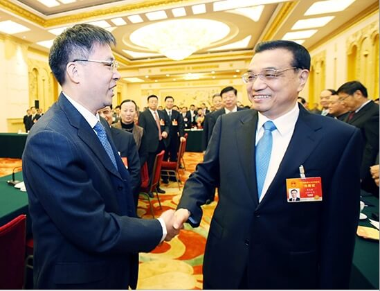
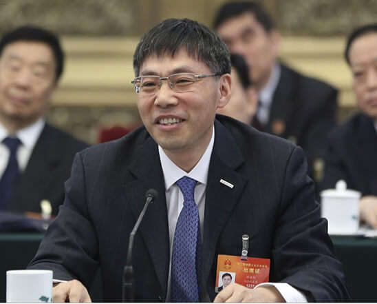
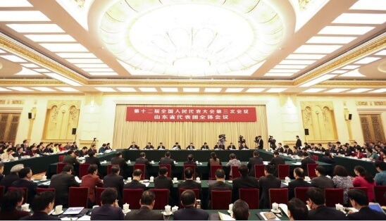

【全国两会】李克强赞誉浪潮云计算、大数据实力 高度肯定浪潮大数据建议
3月6日上午，人民大会堂西大厅，华灯璀璨，鲜花竞放。翘首企盼中，响起潮水般的掌声，中共中央政治局常委、国务院总理李克强来到他所在的山东团，走进代表中间，倾听意见建议，与大家共商国是、同谋发展。
与李克强总理一同来到山东团参加审议的还有中共中央政治局委员、全国人大常委会副委员长、中华全国总工会主席李建国，国务院常务副秘书长肖捷、国家发改委主任徐绍史、商务部部长高虎城、国土资源部部长姜大明、文化部部长雒树刚、国务院政策研究室主任宁吉喆等。
李克强总理步入会场，与孙丕恕董事长等代表亲切握手，热情交谈，亲切的话语赢得阵阵掌声。 山东省委书记、省人大常委主任姜异康主持会议。山东省省委副书记、省长郭树清，德州市市长杨宜新，浪潮集团董事长兼CEO孙丕恕，烟台市第二中学教师郝翠娟、泰安金兰牛奶养殖专业合作社理事长金兰英等五位代表发言。
孙董事长坐在了总理的正对面，做了题为《立足自主创新，打造经济转型升级的助推器》的精彩发言，引起广泛共鸣，得到现场代表一致认可。

孙董事长向总理汇报时说，“去年7月份您来浪潮调研，对浪潮大数据、云计算给予了高度评价，并表示今后出国要像推广高铁、核电一样推广中国的云计算装备，10月份您就带领我们去俄罗斯开拓市场，给我们当推销员，我们倍受鼓舞!”
总理回应说：“我能兑现当时你们的要求吧！希望浪潮的装备走出国门！我和俄罗斯总理见证了你们和俄罗斯关于购买浪潮装备的签约，现在进展怎么样？”
孙董事长答道：“已经形成了销售，并且在探讨进一步的合资合作，在俄罗斯开拓的很好！”
总理祝贺道：“他们也希望和你们合资！你们要抓住机遇！”
孙董事长答到：谢谢总理对我们的支持！
随后，孙董事长围绕立足自主创新打造经济转型升级助推器，结合政府工作报告和自身实践谈了两点体会。
一是云计算、大数据是经济发展的新引擎，而关键应用主机是支撑云计算、大数据的核心装备，是保障国家信息安全的基石。浪潮K1已在金融、电信、电力、军队、党政等关键行业取得了大量成功应用，浪潮为中国互联网市场提供50%以上的服务器，并走向世界，跃居全球第五、中国第一，成为我国信息安全和互联网繁荣的坚实基础。
二是大数据是大众创业、万众创新的助推器，浪潮利用组织数据和互联网数据融合创新，梳理出19类、20PB的互联网大数据，为政府、企业提供数据服务，助力政府提升治理能力和服务水平，帮助企业提高核心竞争力。
就云计算、大数据产业的发展，孙董事长提出两条建议：一是政府要主动开放组织数据，建议国家制定政府组织数据开放的标准和范围，促进大数据产业发展，推动社会治理能力的现代化；二是把云计算中心纳入“一带一路”基础设施建设重要内容，除了传统的物流，还应通过建设云计算中心，进一步打通数据流、信息流，推动相关国家紧密连接我国经济政治体系。
李克强专注倾听，认真记录，并插话询问相关情况。
当听完孙董事长的发言后，李克强总理表示：“你的建议很好，政府掌握的数据要公开，除依法涉密的之外，数据要尽可能地公开，以便于云计算企业为社会服务，也为政府决策、监管服务。”
听取汇报后，李克强总理在讲话中充分肯定了浪潮在云计算、大数据领域的实力，要求山东代表团要牢牢把握省情、国情，紧紧咬住“双中高”目标不动摇，推动中国经济向中高端迈进。像浪潮这样的企业已经处于中高端行列，这很好，但是还要继续努力，保持国际竞争力！
总理对山东和浪潮发展的肯定和关怀，更加坚定了我们立足自主创新，发展云计算、大数据产业的信心，浪潮人也必将牢记总理嘱托，全面围绕集团战略，抓住难得的历史机遇，继续以最大的勇气和决心持续深化改革，实现集团的跨越式发展，成为一流IT企业。
- 新闻链接
- 动态新闻相关了解更多...